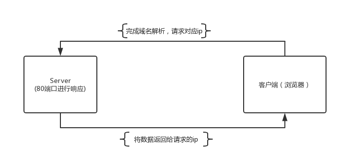
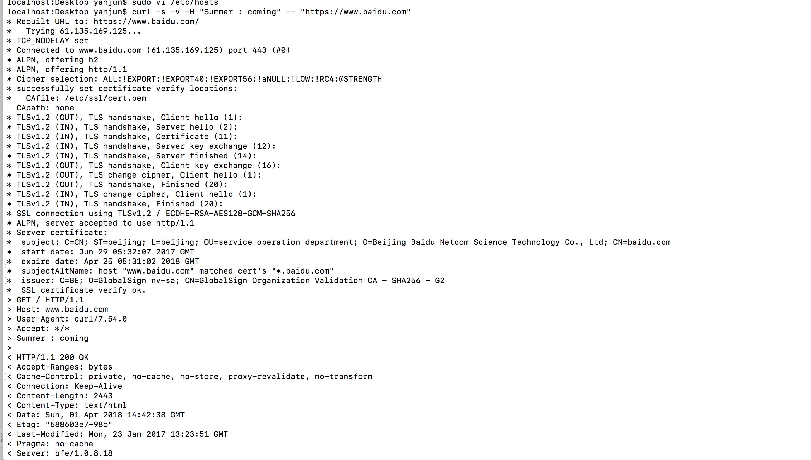
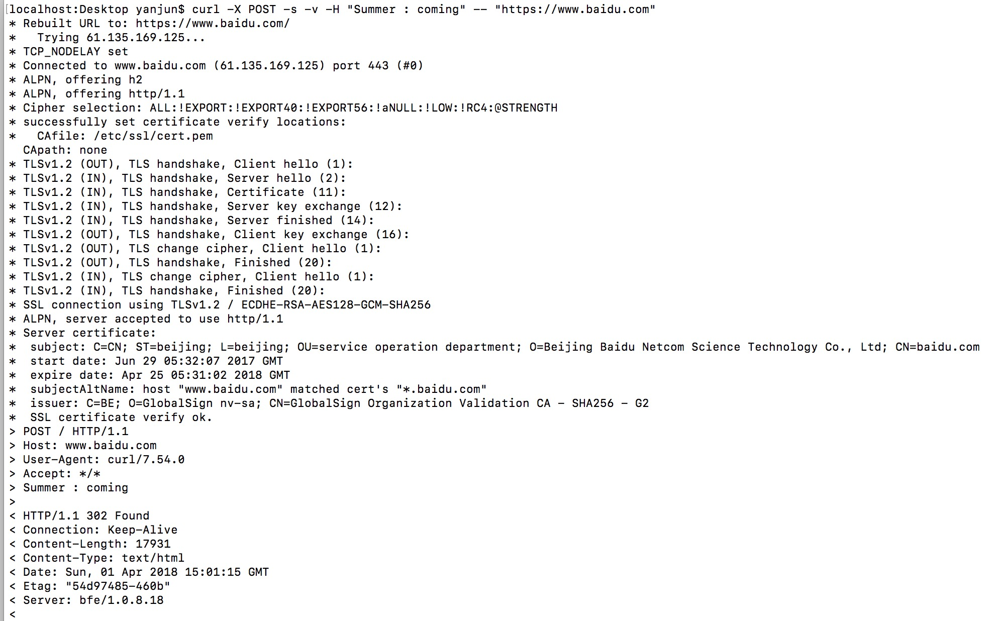
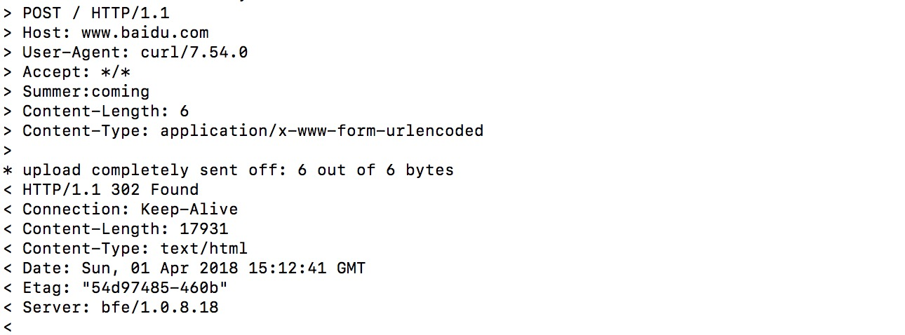

一、WWW
首先先介绍一些服务器端默认端口
- 21: ftp服务端口
- 443: https端口
- 1080: 代理端口
- 80:服务http服务器
- 3306: 服务于mySQL服务器
从浏览器发起请求到的执行顺序如下图所示：

具体步骤为: - 浏览器发起请求
- 服务器在80端口接收请求
- 服务器响应请求
- 浏览器下载响应内容
HTTP的主要作用就是指导浏览器和服务器如何沟通。
二、URL
在访问一个网站的过程中，我们主要接触到的三个概念：
- URI:统一资源标识符（Uniform Resource Identifier俗称网址，作用是能让你访问一个页面，URI包括URN(统一资源标识符,Uniform Resource Identifier)和URL(统一资源定位符,Uniform Resource Locator);
- HTTP:两个电脑之间的传输协议，作用是能让你下载这个页面
- HTML:超级文本，主要用来做页面跳转，作用是让用户看懂这个页面
这里解释一下URN和URL的区别：
URN:通过URN可以确定一个唯一的资源
URL:通过URL可以却低估一个唯一的网址
如：https://www.baidu.com/s?wd=hello&rsv_spt=1#5 ，
其中：
- https:协议
- www.baidu.com ：域名
- /s :路径
- ?wd=hello&rsv_spt=1：查询参数
- #5:锚点
三、DNS(Domain Name System，域名系统) & Hosts
DNS的作用是输入一个域名，然后会输出一个与域名对应的IP值1
2nslookup baidu.com //在终端输入此命令，会返回对用域名的IP
ping baidu.com //可以在终端ping一下此域名，仍然可以返回对应IP
既然可以通过域名访问IP，那么我们就可以给某些域名指定IP：1
2
3sudo vi /etc/hosts //编辑文件
127.0.0.1 baidu.com //在最后一行输入此内容后保存关闭
ping baidu.com //ping此网址，可以看到返回的IP为127.0.0.1
四、请求和响应
1、请求示例（GET）
1 | curl -s -v -H "Summer : coming" -- "https://www.baidu.com" //在终端输入 |
其中:
- curl的含义为transfer a URL
- -s 为不显示进度条
- -v 显示请求和响应，如果无-v，则只显示响应
- -H “Summer:coming” 添加了一个响应头
- –后是请求的网址

显示的数据中，以*开头的为注释语句，可以忽略；
以 > 开头的为请求内容，
以 < 开头的为响应数据，
接下来解读一下请求内容：
- GET / HTTP/1.1：Get方式，/ 为根目录，HTTP/1.1 协议和版本号
- Host: www.baidu.com：访问的域名
- User-Agent: curl/7.54.0：用的是什么环境发起的请求，此处为使用curl，版本为7.54.0发起的请求
- Accept: /：接受返回的任何内容
- Summer : coming：可加可不加的内容
接下来解读一下响应内容：
- 1.HTTP/1.1 200 OK ：协议/版本 状态码(成功) OK
- 2.Accept-Ranges: bytes
- 2.Cache-Control: private, no-cache, no-store, proxy-revalidate, no-transform
- 2.Connection: Keep-Alive
- 2.Content-Length: 2443：返回页面长度
- 2.Content-Type: text/html：返回的文件类型
- 2.Date: Sun, 01 Apr 2018 15:50:19 GMT
- 2.Etag: “588603e2-98b”
- 2.Last-Modified: Mon, 23 Jan 2017 13:23:46 GMT
- 2.Pragma: no-cache
- 2.Server: bfe/1.0.8.18 ：百度外部服务器编号
- 2.Set-Cookie: BDORZ=27315; max-age=86400; domain=.baidu.com; path=/
- 3.
- 4.返回的内容
2、请求示例（POST）
1 | curl -X POST -s -v -H "Summer : coming" -- "https://www.baidu.com" //在终端输入，命令行1 |
其中:
- -X POST :默认的请求方式为GET,此处使用指定POST方式请求数据
- -d “123455”：是指需要往请求地址中上传数据
命令行1的输出结果：

命令行2的输出结果：

显示的数据中，以*开头的为注释语句，可以忽略；
以 > 开头的为请求内容，
以 < 开头的为响应数据，
其中返回的为
接下来解读一下请求内容：
- POST / HTTP/1.1：除请求方式不一致，其他与GET方式请求的内容一致
- Content-Length:6：为-d 后数据的长度
- Content-Type: application/x-www-form-urlencoded：上传数据的格式
解读一下响应内容：
- 除返回的状态码不一致，为302，其他与GET方式一致，
根据以上可以总结出，所有的请求格式：
1 动词 路径 协议/版本
2 Key1: value1
2 Key2: value2
2 Key3: value3
2 Content-Type: application/x-www-form-urlencoded
2 HOst: www.baidu.com
2 User-Agent: curl/7.54.0
3
4 要上传的数据
- 即请求中最多包含四部分，最少三部分，包含三部分时无请求数据
- 第三部分永远为一个回车
- 所有动词包含：GET(获取) POST(新增，上传) PUT(整体更新) PATCH(部分更新) DELETE(删除) HEAD OPTIONS等
- 路径包含查询参数，不包括锚点
- 不写路径默认为/
- 第二部分Content-Type标注第四部分的数据格式
所有的响应格式为：
1 协议/版本 状态码 状态解释
2 Key1: value1
2 Key2: value2
2 Key3: value3
2 Content-Length: 17931
2 Content-Length: text/html
3
4 要下载的内容
- 即请求中最多包含四部分，最少三部分，包含三部分时无请求数据
- 第三部分永远为一个回车
- 所有动词包含：GET(获取) POST(新增，上传) PUT(整体更新) PATCH(部分更新) DELETE(删除) HEAD OPTIONS等
- 路径包含查询参数，不包括锚点
- 不写路径默认为/
- 第二部分Content-Type标注第四部分的数据格式
五、 其他
1、Get和POST区别
GET：获取内容，如打开页面，此方式也可添加-d来传数据，但是www.baidu.com不承认此种方法上传数据；再就是GET方式可以通过URL来传递数据，这就意味着数据暴露且浏览器对于URL的长度是有限制的，如果数据量较大，浏览器的限制会截取掉部分数据
POST：上传内容，如登录；且POST传递的数据大小相对于GET就大很多，不易暴露数据
2、使用Chrome发请求
1)f12/鼠标右键查看 -> Network
2)地址栏输入网址
3)在Network中，查看request Headers->view source->可查看到请求的第一/第二部分
4)POST请求查看需有登录操作，并且选中Preserve log(保留日志)，按上述操作即可查看到请求的第四部分内容
3、使用Chrome查看响应
Network->Response->view source
4、常用状态码
1 | 1xx：不常用 |